Work
From the frame
Pieces stitched by Norinda, samplers finished by her students, and moments from classes and travels. Select any image to see it larger.
Photography by Norinda K. Su'ut

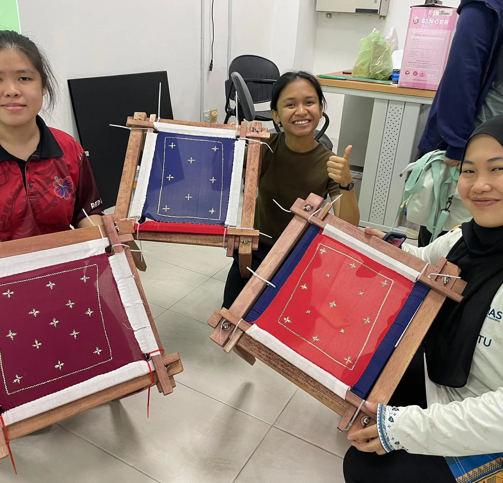
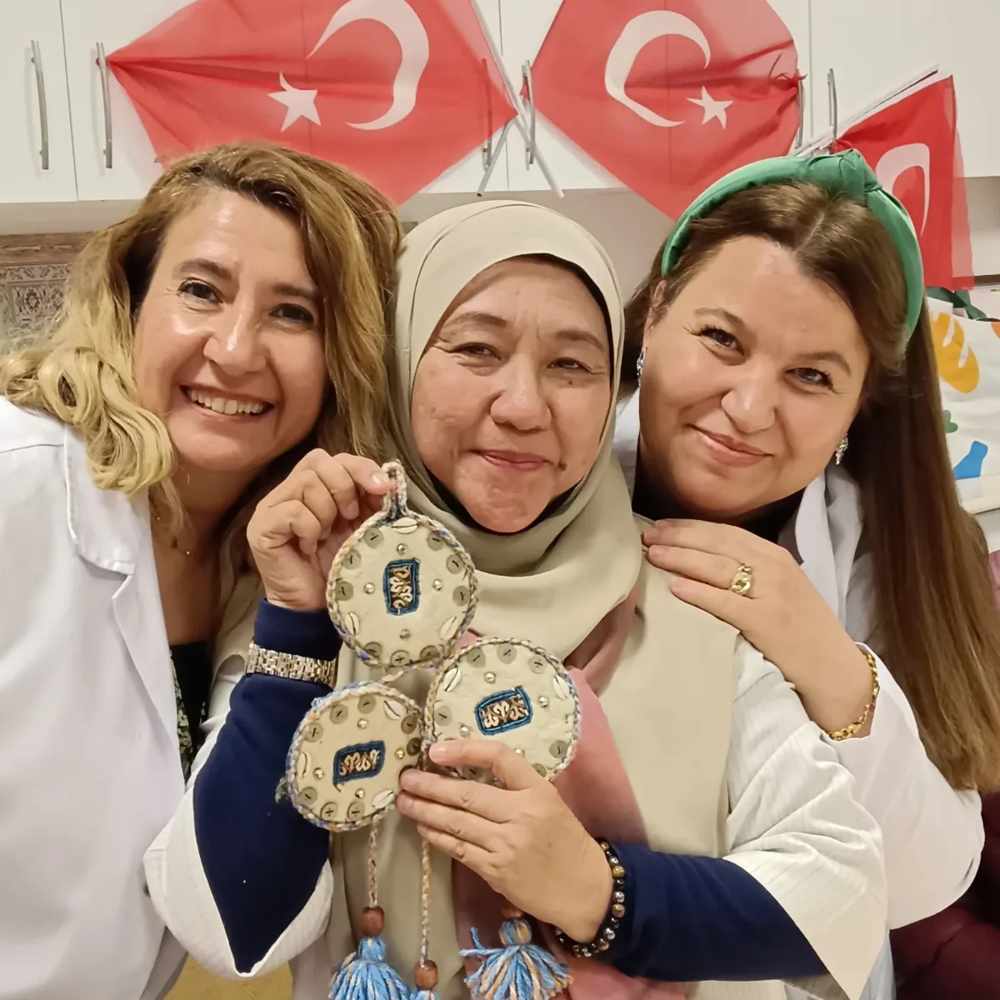
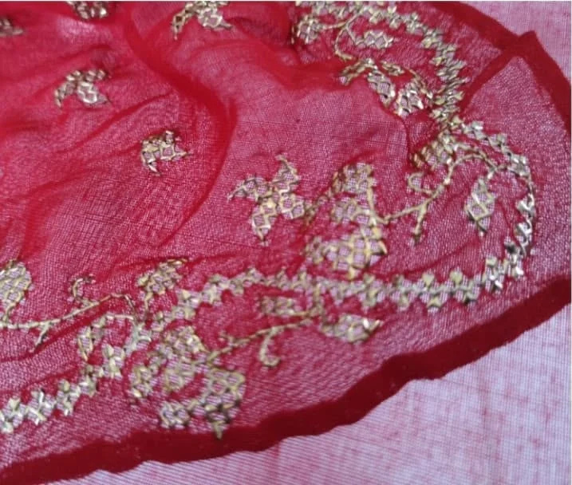


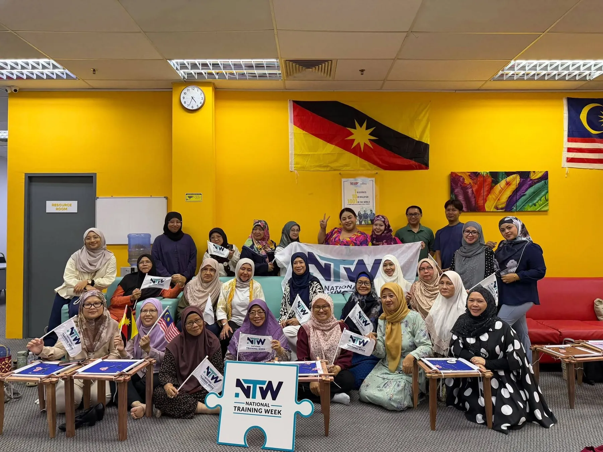
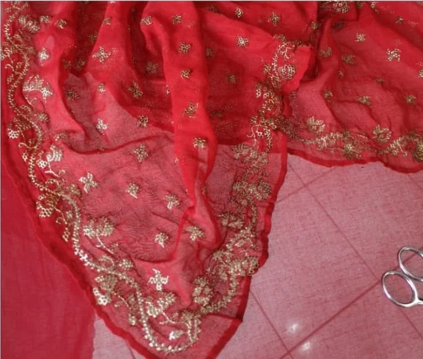
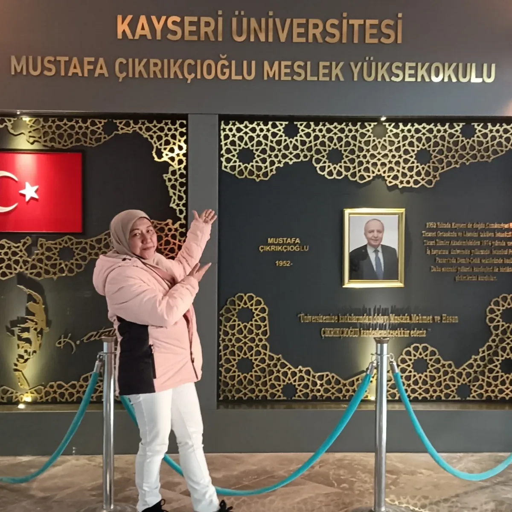
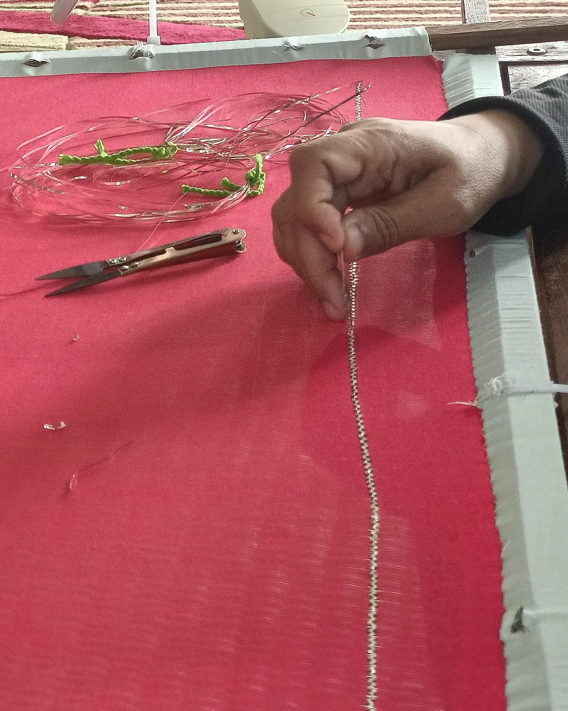

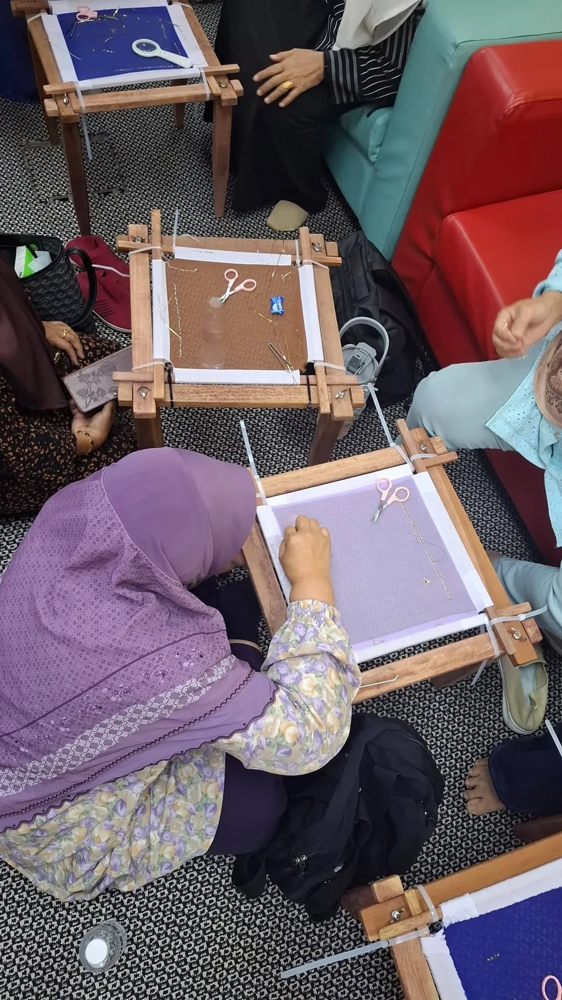
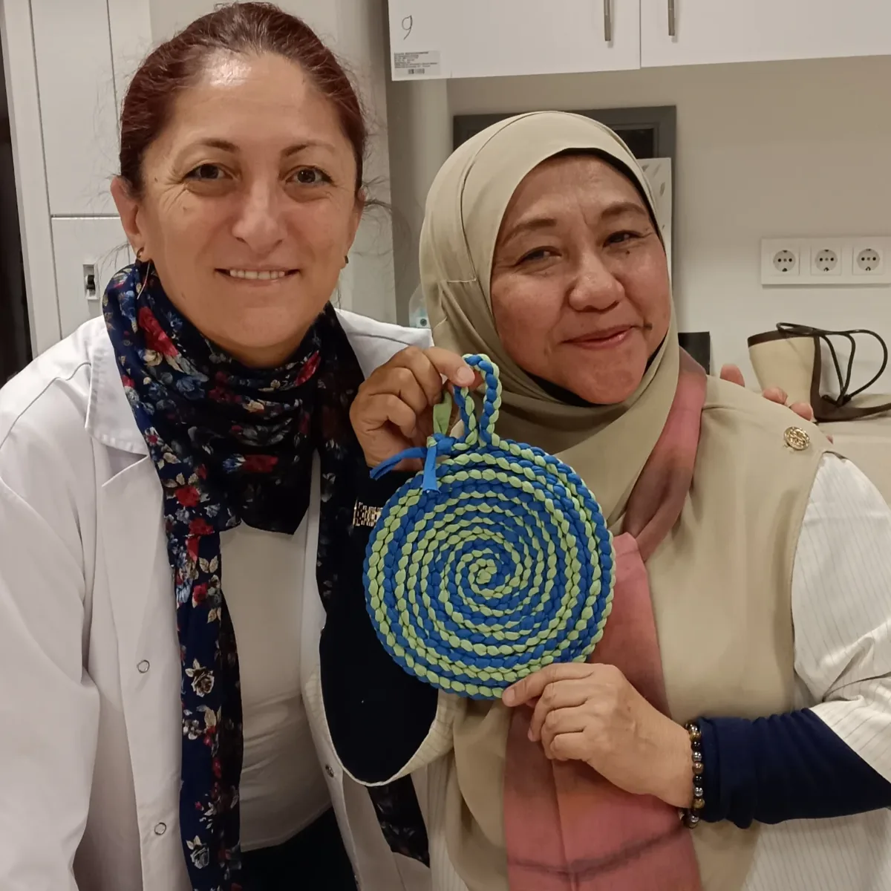


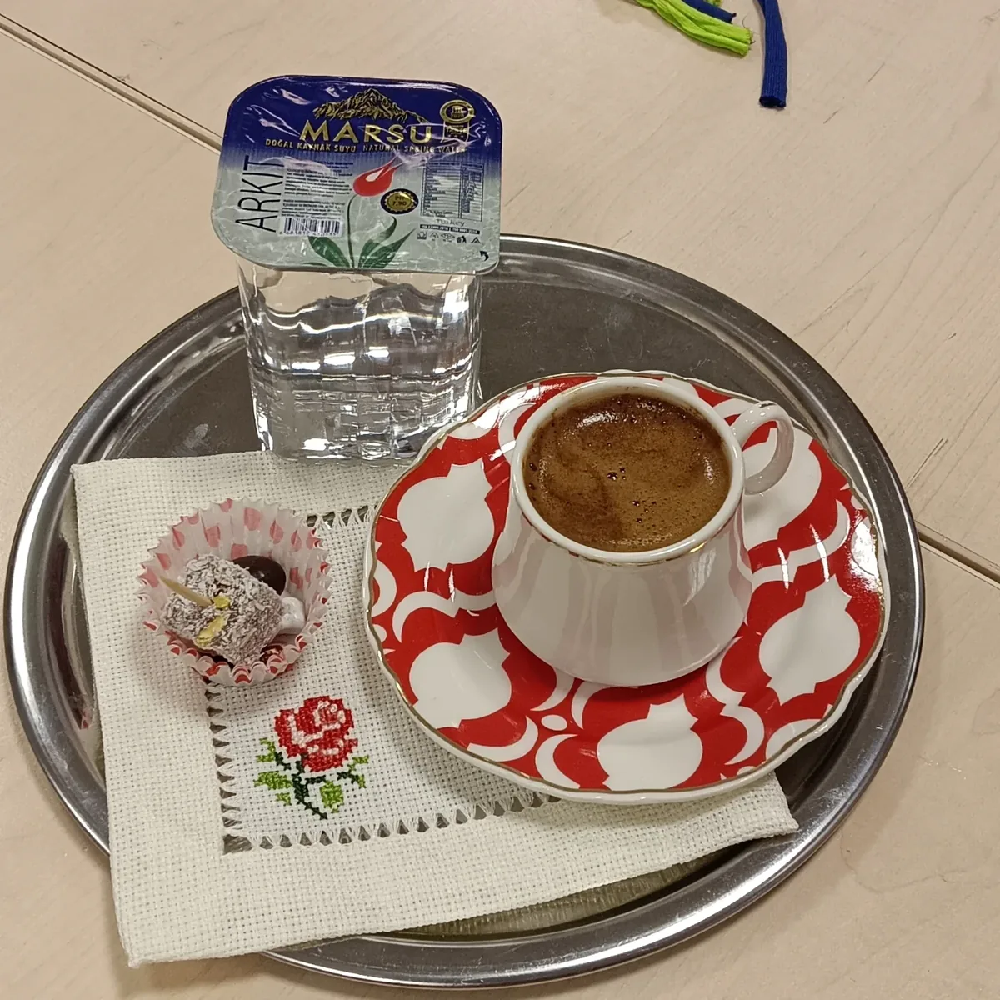
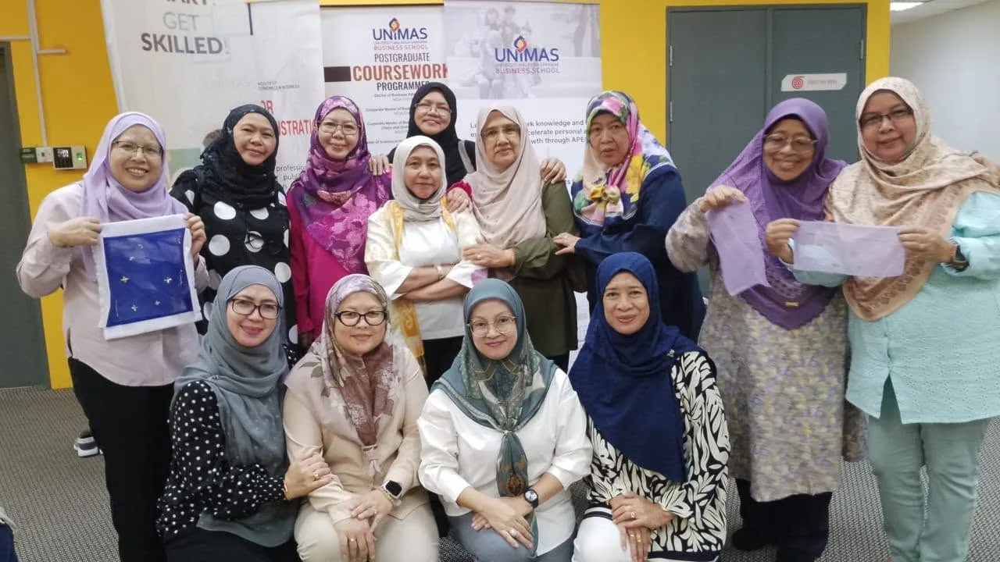
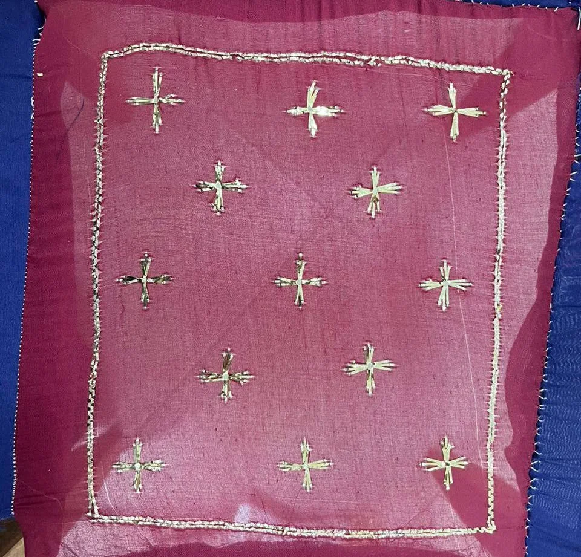
Your piece next
Commission
a keringkam
A selayah, a selendang or a piece for the home, designed with you and stitched by hand.
Start a conversation